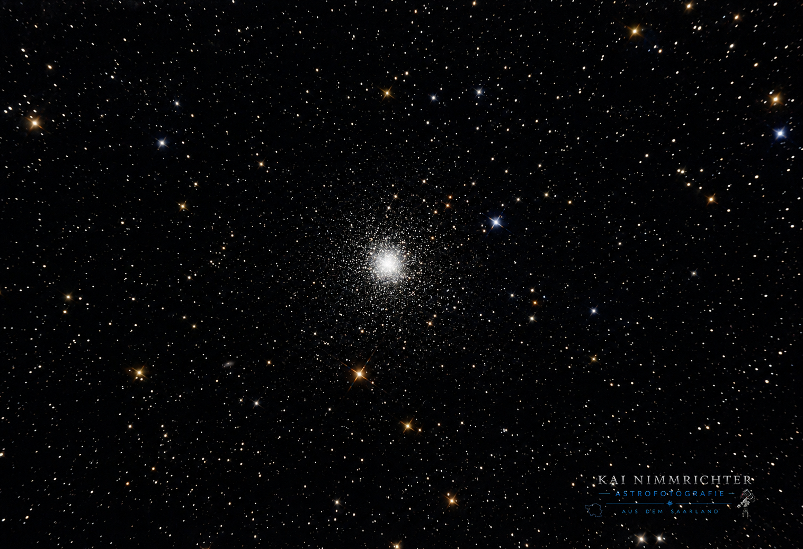

M13 Kugelsternhaufen
Der Große Kugelsternhaufen im Herkules.

M13 ist der hellste Kugelsternhaufen am Nordhimmel und wurde schon 1714 von dem englischen Astronomen Sir Edmond Halley entdeckt. Er ist etwa 25.100 Lichtjahre von der Sonne entfernt (die Angaben schwanken zwischen 23.000 und 26.000 Lj), hat die 300.000 fache Leuchtkraft der Sonne und einen Durchmesser von 150 Lichtjahren.
Mit einer scheinbaren Helligkeit von 5,8 mag gehört M13 zu den wenigen Kugelsternhaufen, die unter einem wirklich dunklen Himmel sogar mit bloßem Auge sichtbar sind. Im Fernglas zeigt er sich als kleiner, diffuser Lichtfleck, während in Teleskopen ab etwa 10 cm Öffnung bereits die ersten Einzelsterne aufgelöst werden können. Besonders in den Frühlings und Sommermonaten zählt M13 für mich zu den schönsten Beobachtungsobjekten am Nachthimmel. Zu finden ist er im Sternbild Herkules zwischen den Sternen η und ξ Herculis, eingebettet im markanten „Schulterviereck“ des Herkules.
M13 wurde bereits 1714 von Edmond Halley entdeckt und 1764 von Charles Messier in seinen Katalog aufgenommen. Erst William Herschel gelang es später, den Kugelsternhaufen in Einzelsterne aufzulösen. Bekannt wurde M13 zudem durch die 1974 ausgestrahlte Arecibo‑Botschaft ein Radiosignal, das als symbolischer Gruß der Menschheit in Richtung des Sternhaufens gesendet wurde und bis heute für die Suche nach außerirdischem Leben steht.